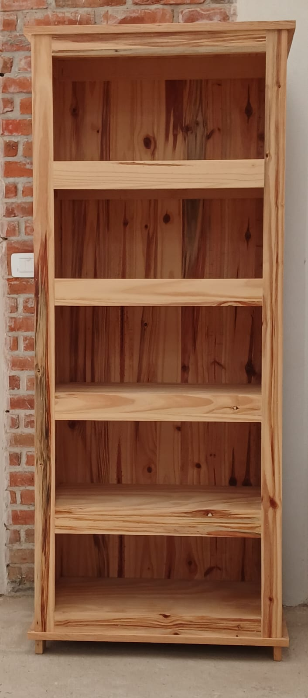
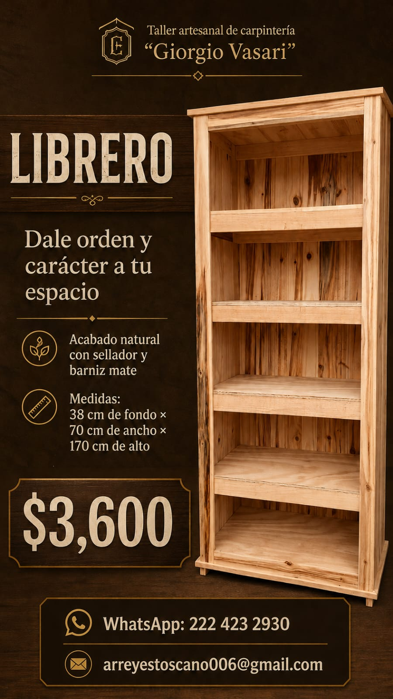
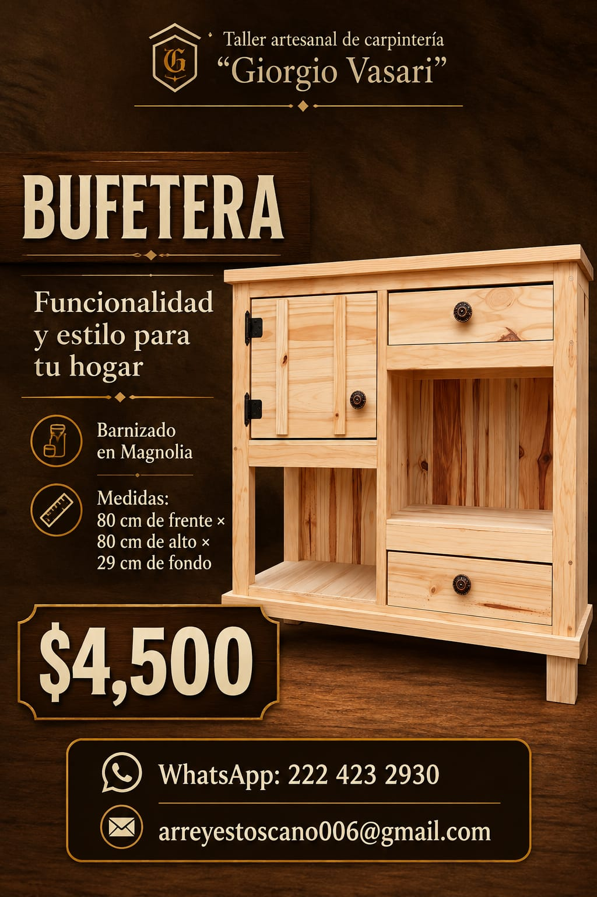
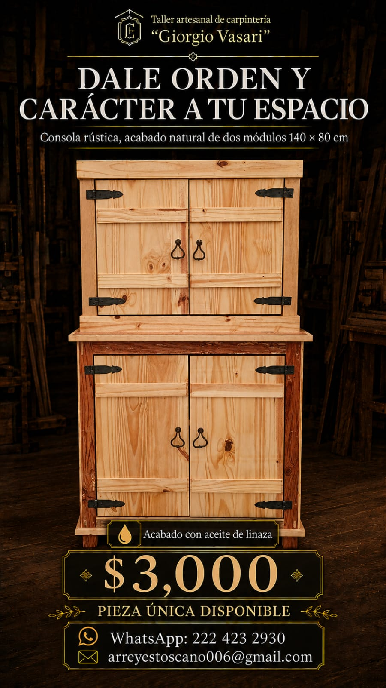
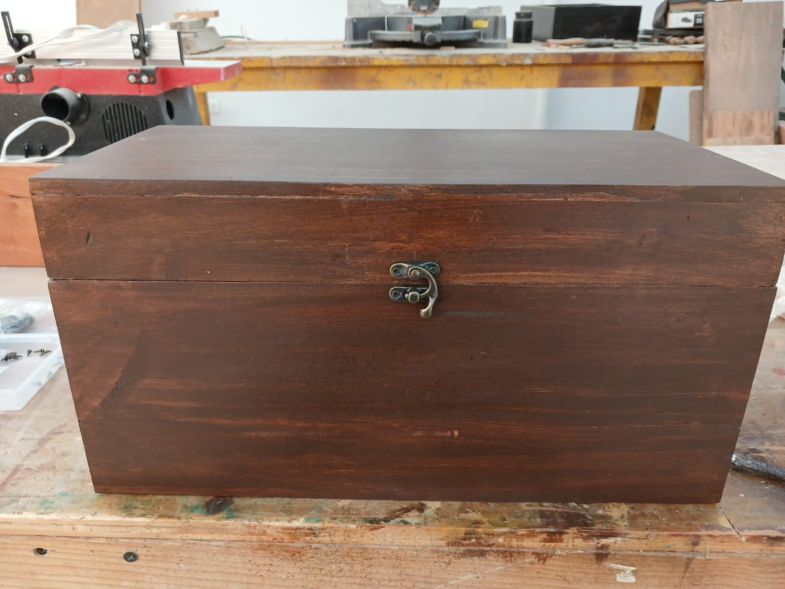
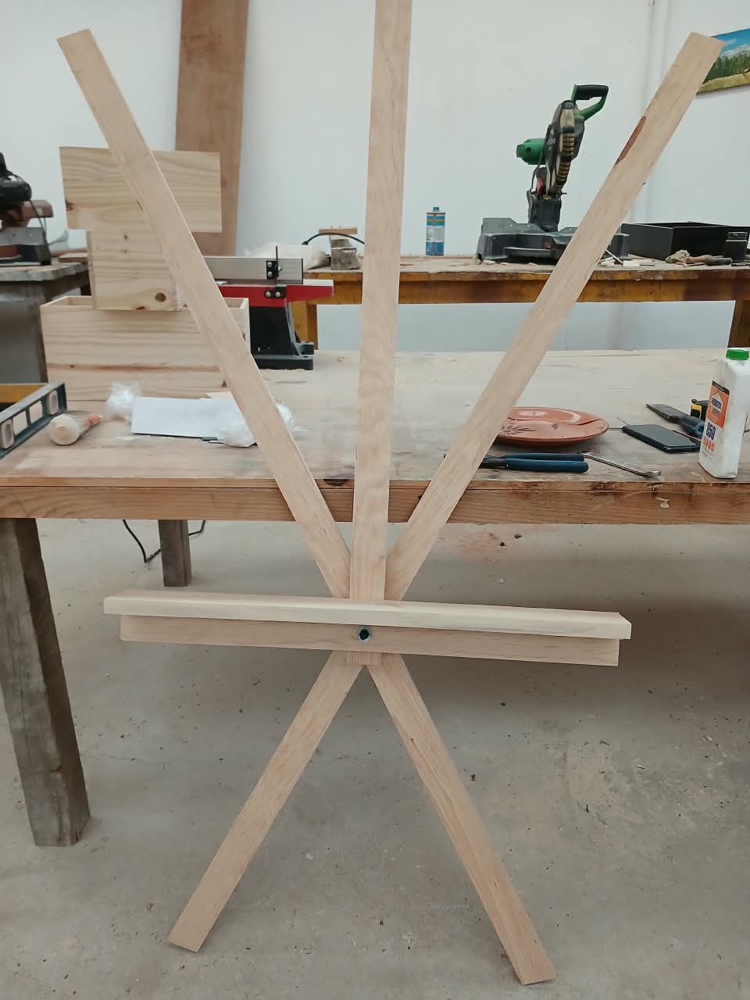
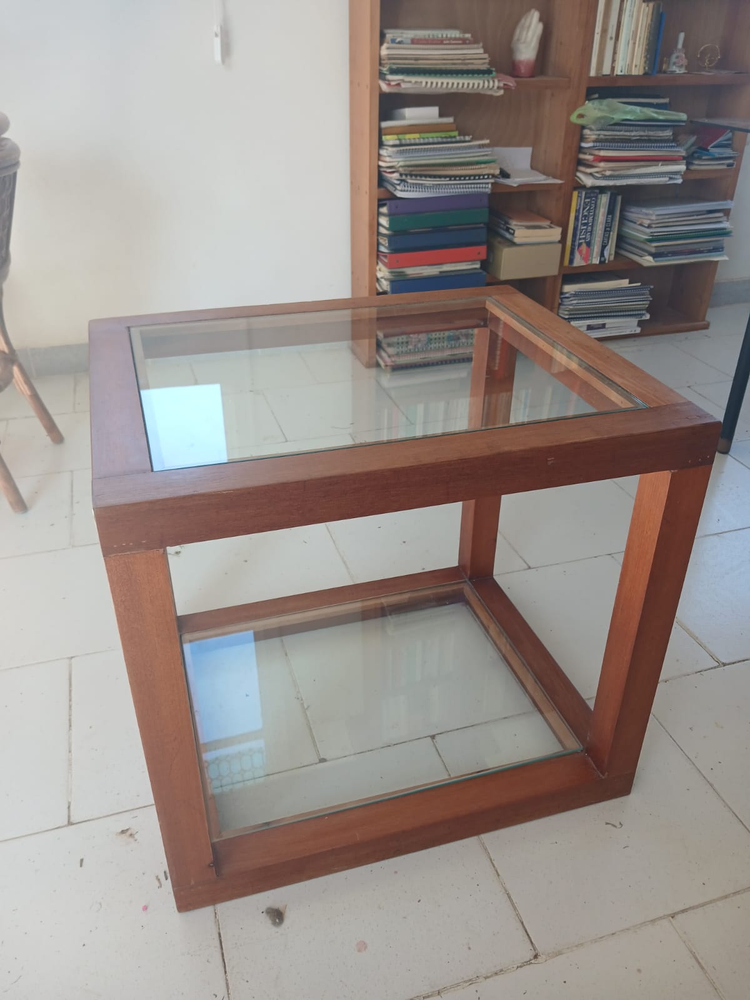
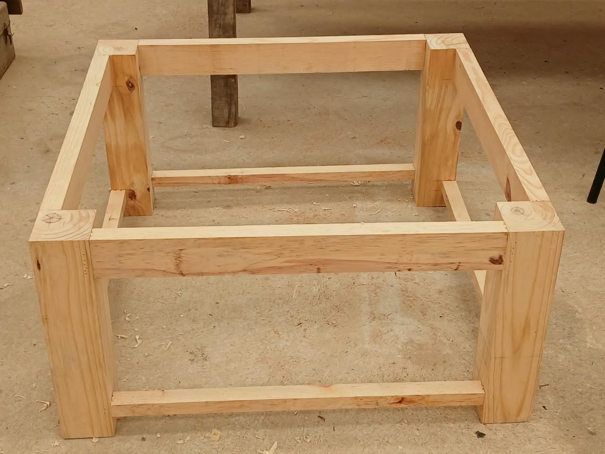
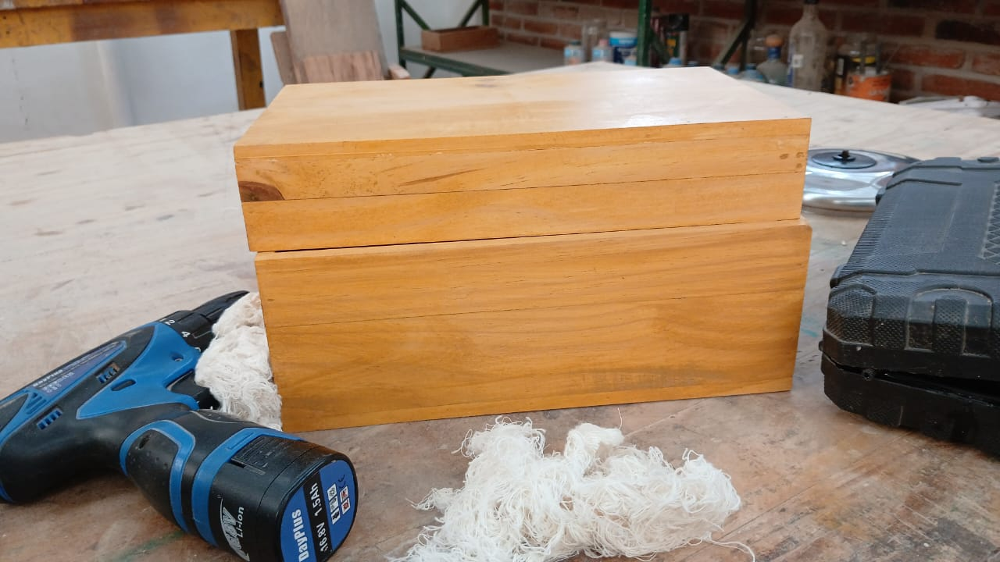
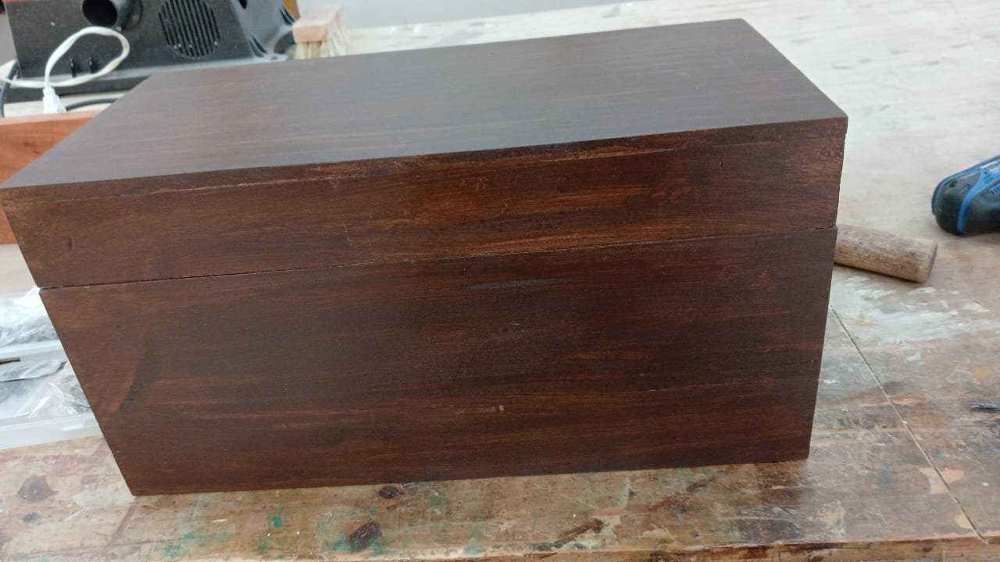

Taller artesanal de carpintería · Chipilo, Puebla
Dale orden y carácter a tu espacio.
Libreros, bufeteras, consolas y baúles hechos a mano en el taller Giorgio Vasari, con acabados que dejan hablar a la veta de la madera.
- Hecho a mano, pieza por pieza
- Acabados que respetan la veta
- Trato directo por WhatsApp



Librero 170 cm de alto
Consola 140 × 80 cm
Bufetera barnizada en magnolia
- Libreros
- Bufeteras
- Consolas rústicas
- Baúles
- Caballetes para artistas
- Mesas de centro
- Puertas y gabinetes
El oficio
Un taller donde no hay dos piezas iguales
En este taller no hay dos piezas iguales. Cada mueble empieza con un tablón, una medida y una conversación contigo; lo cortamos, lo ensamblamos y lo terminamos a mano para que llegue a tu casa con el carácter de la madera de verdad.
-
Hecho a mano
Cada ensamble, cada lijado y cada acabado pasa por las manos del taller. Sin producción en serie.
-
Madera que se luce
Sellador y barniz mate, aceite de linaza o barnizado en magnolia: acabados que dejan ver la veta.
-
Trato directo
Hablas con el taller por WhatsApp: medidas, acabado y dudas, sin intermediarios de por medio.
Piezas del taller
Tres piezas para empezar la plática
Precios publicados en los anuncios del taller. Confirma disponibilidad y tiempos por WhatsApp.
Catálogo del taller
Todo lo que sale del taller
Del librero que ordena tu sala al caballete que sostiene tu próximo lienzo. Estas son algunas de las piezas que nacen en Chipilo.
Bufeteras y consolas rústicas
Guardado con estilo para recibidor, comedor o sala, con herrajes de hierro.
Quiero ver bufeteras y consolas

Caballetes para artistas
Soportes de madera armados y ajustados a mano para tu lienzo.
Quiero mi caballete
Puertas y gabinetes
Frentes de doble hoja con tirante en Z y herrajes de hierro.
Platicar mis puertasFicha técnica
Medidas reales. Cero sorpresas.
Así de grandes son las piezas publicadas en los anuncios del taller, antes de que las imagines en tu espacio.
- Frente
- 80 cm
- Alto
- 80 cm
- Fondo
- 29 cm
- Fondo
- 38 cm
- Ancho
- 70 cm
- Alto
- 170 cm
¿Tu espacio mide distinto? Platícanos tus medidas y vemos cómo acomodarlo.
Quiero platicar mis medidasDentro del taller
Madera, herramienta y manos
Fotos reales de piezas terminadas y en proceso. Arrastra para girar la galería.



Librero en acabado natural
Acabados
Cuatro maneras de vestir la madera
Elige cómo quieres que luzca tu pieza. Te ayudamos a decidir según el espacio donde va a vivir.
Cómo trabajamos
Del tablón a tu casa
Cinco pasos, una conversación abierta y madera trabajada sin prisas.
-
01
Platicamos tu idea
Nos cuentas qué necesitas, para qué espacio y con qué medidas. Si tienes una foto de referencia, mejor.
-
02
Elegimos madera y acabado
Natural con sellador y barniz mate, aceite de linaza, barnizado en magnolia u oscuro: decides cómo quieres que luzca.
-
03
Cortamos y ensamblamos
La madera se corta, se escuadra y se une pieza por pieza. Aquí es donde el mueble toma forma.
-
04
Terminamos a mano
Lijado, sellador, barniz o aceite. El acabado se aplica con paciencia para que la veta se luzca.
-
05
Tu pieza, lista para casa
Acordamos contigo cómo recibirla y tu mueble queda listo para ocupar su lugar.
Quiero empezar mi pieza
El taller
Un taller en Chipilo, con nombre y apellido
Somos el taller artesanal de carpintería «Giorgio Vasari», a cargo de Armando Reyes y Toscano. Trabajamos por pieza, con trato directo y sin prisas que le quiten el carácter a la madera.
Camino Real del Monte 103Chipilo, Puebla · Mpio. San Gregorio Atzompa
Preguntas frecuentes
Antes de escribirnos
Lo que más nos preguntan. Si falta algo, mándanos un mensaje y lo platicamos.
¿Cómo pido una pieza al taller?
Escríbenos por WhatsApp con la pieza que te interesa, las medidas de tu espacio y el acabado que imaginas. Te respondemos para platicar los detalles.
¿Los precios de la página son fijos?
Son los precios de los anuncios del taller: consola rústica $3,000, bufetera $4,500 y librero $3,600. Para baúles, caballetes y otras piezas platicamos según medidas y acabado.
¿Qué acabados manejan?
Natural con sellador y barniz mate, aceite de linaza, barnizado en magnolia y barniz oscuro. Si dudas, te ayudamos a elegir según dónde va a vivir tu pieza.
¿Puedo pedir algo distinto a lo que veo aquí?
Cuéntanos tu idea: además de libreros, bufeteras y consolas, trabajamos baúles, caballetes para artistas y mesas de centro. Platicamos qué se puede hacer.
¿Las piezas de la página siguen disponibles?
Algunas son piezas únicas, como la consola rústica. Confirma disponibilidad por WhatsApp antes de apartar la tuya.
¿Dónde está el taller?
En Camino Real del Monte 103, Chipilo, Puebla (municipio de San Gregorio Atzompa). Escríbenos antes de venir para coordinar tu visita.
Hablemos de tu mueble
Cuéntanos qué mueble imaginas
Llena el formulario y se abre WhatsApp con tu mensaje listo para enviar. Sin vueltas: hablas directo con el taller.
- WhatsApp y celular222 423 2930
- Correoarreyestoscano006@gmail.com
- TallerCamino Real del Monte 103, Chipilo, Puebla